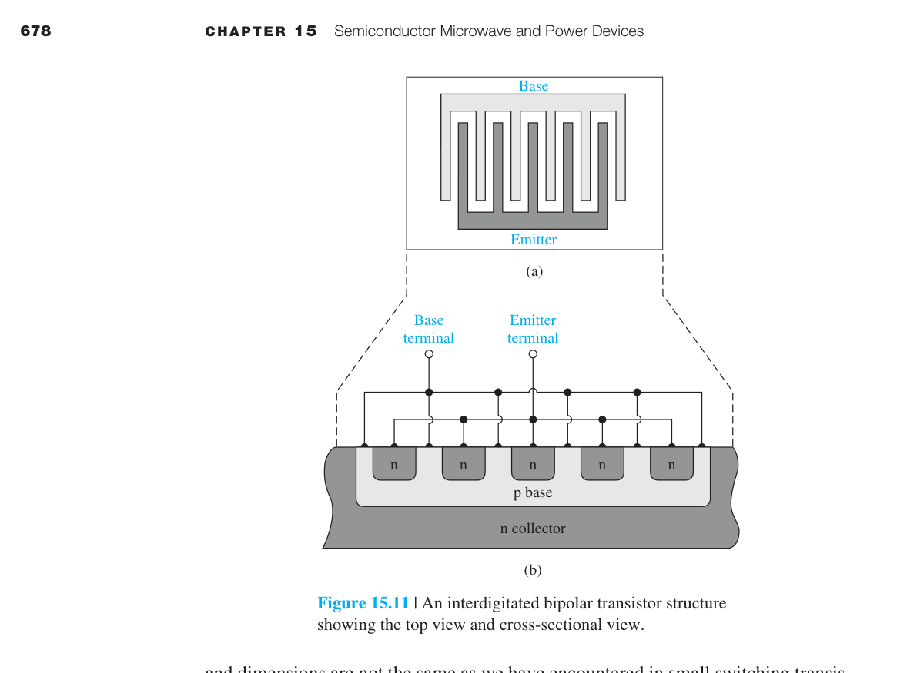
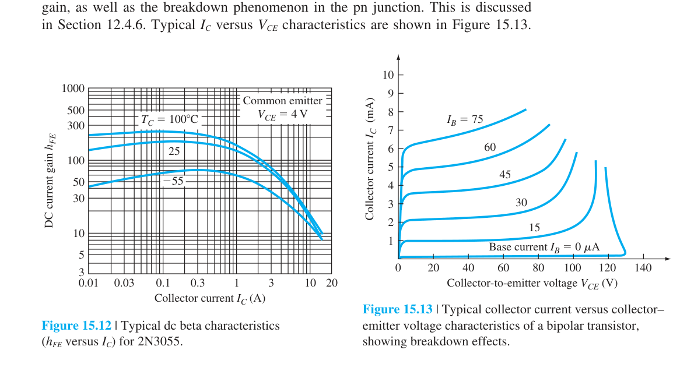

半導體微波與功率元件
15.0 本章預覽
前面十四章建立了半導體物理的完整基礎——從晶體結構、載子統計、輸運現象，到 pn 接面、BJT、MOSFET。但這些分析都在「正常條件」下：中等電壓、中等電流、中等頻率。本章問一個更難的問題：當電場極強、頻率極高（微波波段）、電流極大、寄生效應極重時，半導體物理會變成什麼樣？
答案是將前面學過的穿隧（Ch8 §8.5）、速度飽和（Ch5 §5.1.4）、撞擊游離（Ch12 §12.4.6）、寄生 BJT（本章 §15.5.3）、再生正回授等機制推至極限。本章就是這些物理在工程前沿的會合點。
本章分為兩大區塊：前半（§15.1–§15.3）討論三種產生微波振盪的半導體元件——Tunnel Diode、Gunn Diode、IMPATT Diode——它們的共同特徵是需要負微分電阻（NDR）才能振盪，但 NDR 的物理來源截然不同。後半（§15.4–§15.6）討論功率半導體元件——Power BJT、Power MOSFET、Thyristor——它們的核心挑戰是耐壓、大電流、散熱、以及安全操作區（SOA）的邊界。
關鍵概念
- 負微分電阻：Tunnel、Gunn、IMPATT 的微波振盪基礎。
- 穿隧與能谷轉移：量子穿隧與 Γ→L 谷造成 NDR。
- 功率 BJT/MOSFET：垂直結構、$R_{on}$ 與 SOA 是核心指標。
- 寄生與熱：高場高流下鎖存、二次崩潰限制安全區。
- SCR：pnpn 再生回授實現高功率開關。
🧭 本章推理地圖
- 已知條件極強電場、微波頻率或大電流功率條件（§15.1–§15.3、§15.4–§15.6）
- 中間機制穿隧、渡越時間、雪崩倍增或再生回授產生 NDR/開關行為（§15.1–§15.3、§15.6）
- 極端後果寄生 BJT、熱與 SOA 邊界限制可靠操作（§15.4–§15.5）
- 工程用途微波源、高壓功率開關與大電流控制應用（工程決策）
15.1 穿隧二極體
穿隧二極體使用極重摻雜 pn 接面，使空乏區極薄（約數十 Å），電子可透過量子穿隧跨越接面，無需熱激發越過整個能隙。
小正向偏壓時，n 側導帶已佔據態與 p 側價帶空態對準→穿隧電流急增；偏壓再增，能態重疊變差→電流下降，形成負微分電阻（NDR） 區。更高偏壓下普通注入擴散電流主導，電流再上升，I–V 呈 N 形。
NDR 使穿隧二極體可用於微波振盪與高速開關：外部諧振電路中，負阻可補償損耗。穿隧為量子過程，無少數載子儲存與擴散延遲，理論截止頻率可很高；實際受接面電容、串聯電阻與寄生電感限制。
截止頻率 $f_r \propto 1/(R_{\min} C_j)$，設計時須同時最小化串聯電阻與接面電容。
📝 自編概念例 — NDR 振盪條件
負微分電阻區斜率 $dI/dV<0$；與 $LCR$ 諧振器並聯時，若 $|dI/dV|$ 大於諧振器損耗電導，可起振。
15.2 甘恩二極體
Gunn diode 非傳統 pn 接面，而是利用 III–V 材料（如 GaAs）導帶多能谷結構。低電場時電子在高遷移率 Γ 谷；高電場下部分電子轉移至低遷移率 L 谷，平均漂移速度隨電場增加反而下降→負微分遷移率。
均勻高場分布因此不穩定，形成高電場畴（domain） 沿樣品傳播，至陽極消失後再生成，產生週期性電流脈衝。振盪頻率 $f \sim v_d/L$，$L$ 為有效區長度，可達 GHz 微波段。
與速度飽和不同：飽和是 $v$ 趨近上限；Gunn 是 $dv/d\mathcal{E}<0$，使電場分布失穩。這是把能帶工程轉成可觀測微波振盪的體效應元件典例。
輸出功率、效率與頻率穩定性受熱效應與材料均勻性限制，實務需散熱與偏壓穩定設計。
📐 例題 — 頻率估算
$L=10$ µm、$v_d=10^7$ cm/s → $f\sim v_d/L\approx10$ GHz。
15.3 IMPATT 二極體
IMPATT（Impact ionization Avalanche Transit-Time）在高反向偏壓下，接面附近發生雪崩倍增，載子再穿越漂移區。雪崩建立與漂移渡越各引入約 $\pi/2$ 相位延遲，總計接近 $\pi$，使交流下呈現動態負電阻（DC $dI/dV$ 仍可為正）。
優點：微波至毫米波段可輸出較高功率。缺點：雪崩統計性帶來大雜訊、偏壓高、熱設計嚴苛。須精準控制漂移區厚度與摻雜分布。
與 APD 比較：兩者皆用撞擊游離，但 APD 目標為光偵測增益，IMPATT 目標為利用延遲產生振盪負阻。相同物理、不同結構與電路功能。
振盧頻率常寫 $f \sim v_s/(2L)$，$L$ 為漂移區厚度，與渡越時間直接相關。
📝 自編概念例 — 三種 NDR 對照
Tunnel：量子穿隧態重疊；Gunn：能谷轉移；IMPATT：雪崩+渡越相位延遲。
15.4 功率雙極性電晶體 (Power BJT)
從訊號放大到功率處理——BJT 在極限條件下的物理
Ch12 討論 BJT 時，我們假設電晶體可承受任意電流和電壓。但真實世界中，功率 BJT 有明確的物理極限：最大電流（導線熔斷）、最大電壓（崩潰）、最大功率（熱損壞）。更微妙的是，這些極限不能同時達到——操作點必須在安全操作區（SOA）內。功率 BJT 的核心設計方向是：通過垂直結構實現耐高壓，通過寬基區防止 punch-through，但這兩者都犧牲了電流增益——這引出 Darlington pair 等補償方案。
功率 BJT 的核心矛盾是高壓阻斷（厚低摻雜漂移區）與低導通損失（少數載子導電率調變）之間的取捨。寬基區降低 $\beta$ 但防止 punch-through。
SOA 四邊界——$I_{C,\max}$、$V_{CE,\text{sus}}$、$P_T$ 雙曲線、二次崩潰——定義安全操作區；高壓與大電流通常不能同時極限使用。
熱失控：$\beta$ 隨溫度升→$I_C$ 升→功耗升→溫度再升，正回授。功率 MOSFET 的 $R_{DS(on)}$ 正溫度係數在此形成對比優勢。
📝 自編概念例 — SOA 判讀
操作點須同時低於電流限、電壓限、功耗雙曲線與二次崩潰界線。
15.4.1 垂直功率電晶體結構
垂直結構——為什麼 Collector 在底部？
功率 BJT 採用垂直 npn 結構而非平面結構。Emitter 在頂部，Base 在中間，Collector 在底部。這樣的好處是：① 最大化電流流動的截面積→可處理大電流；② 熱量從接面直接傳到封裝散熱片→散熱效率高。
關鍵的 Collector 漂移區（drift region）具有低摻雜濃度（$N_C \sim 10^{14}\ \text{cm}^{-3}$）和大寬度（50–200 µm）。低摻雜使空乏區主要向 Collector 側延伸→可承受大逆向偏壓而不崩潰。寬度需要夠大以防止 punch-through——Base-Collector 空乏區穿透 Base 區到達 Emitter（Ch12 §12.4.5）。基區也比小訊號 BJT 寬得多（∼5–20 µm），同樣是為了防止 punch-through。
電流增益的權衡
寬基區的直接代價是電流增益 $\beta$ 大幅降低。小訊號 BJT 的 $\beta$ 可達 100–500；功率 BJT 的 $\beta$ 通常只有 5–100，而且隨集極電流和溫度強烈變化。這是因為寬基區中少數載子復合增多→基極傳輸因子 $\alpha_T$ 降低→$\beta$ 降低。
另一個限制是射極電流擁擠效應（emitter current crowding）：基極電阻造成的橫向壓降使得射極邊緣的電流密度遠高於中心。功率 BJT 使用交指式結構（interdigitated structure，圖 15.11，p.703）來緩解——把射極分成多個窄條，增大周長對面積比，使電流分布更均勻。

垂直功率 BJT 的核心是讓電流垂直穿越晶片，以取得較大的電流截面積與較好的散熱路徑。
例題：為什麼功率 BJT 採垂直結構？
若電流在晶片表面橫向流動，電流能力與散熱都受限制。垂直結構可利用整個晶片厚度支撐電壓，並把熱往封裝底部導出。
15.4.2 功率電晶體特性
安全操作區 (SOA) —— 功率 BJT 的「護照」
SOA 是 $I_C$–$V_{CE}$ 平面上電晶體可以安全操作的區域，由四條邊界定義（圖 15.12，p.704）：

- $I_{C,\max}$（最大電流界限）：由金屬導線的熔斷電流、$\beta$ 降至最低可接受值時的電流、或飽和區最大功耗對應的電流決定。
- $V_{CE,\text{sus}}$（最大電壓界限）：維持崩潰的最小電壓（sustaining voltage）。在共射極組態下，崩潰電壓 $BV_{CEO}$ 受 $\beta$ 影響——$BV_{CEO} = BV_{CBO} / \beta^{1/n}$（$n \approx 3$–6）。$\beta$ 越大→$BV_{CEO}$ 越低。
- $P_T$（最大功率界限）：$P_T = V_{CE} I_C$。在 $I_C$–$V_{CE}$ 圖上是一條雙曲線。功率限制來自接面溫度——矽元件的最大接面溫度通常為 150–200°C。
- 二次崩潰（Second Breakdown）界限：高電壓高電流下，局部電流不均勻→局部發熱→少數載子增加→電流更集中→正回授→局部熔融短路。這是功率 BJT 最致命的失效模式。
功率 BJT 的特性必須同時看電流增益、耐壓、最大功耗、SOA 與熱穩定性。
高電流下 $\beta$ 可能下降，基極驅動需求增加，開關速度也會受到儲存電荷影響。
SOA 把最大電流、最大電壓、功耗與二次崩潰限制放在同一張安全地圖上。
熱失控是 BJT 的核心風險，因為溫度上升可能提高電流，進一步提高功耗與溫度。
例題：判斷操作點是否安全
若某操作點同時具有高電壓與高電流，即使兩者各自低於資料表最大值，也可能超出 SOA。應檢查功耗線、二次崩潰區與脈衝時間條件。
15.4.3 Darlington Pair 結構
Darlington pair 將兩級 BJT 串接，總電流增益約 $\beta_{\text{eff}}\approx\beta_A\beta_B$，可用很小基極電流驅動大集極電流，適合功率驅動級。
代價是等效飽和壓降較高（兩個 $V_{CE(sat)}$ 串聯），且兩級儲存電荷使關斷變慢，不適合高頻硬開關。
第一級漏電被第二級放大，高溫下漏電增大可能影響關斷；常加射極電阻、關斷二極體或專用驅動改善穩定性。
Darlington 是增益與壓降、速度、熱穩定之間的工程折衷，非單純「增益越大越好」。
📐 例題 — 增益估算
$\beta_A=50$、$\beta_B=80$ → $\beta_{\text{eff}}\approx4000$；驅動 10 A 僅需約 2.5 mA 基極電流（理想估算）。
15.5 功率 MOSFET
電壓控制與正溫度係數——MOSFET 的功率優勢
功率 MOSFET 繼承了普通 MOSFET（Ch10–11）的電壓控制優點——高輸入阻抗使閘極驅動電流極小。但它在功率領域真正的殺手級優勢來自溫度係數的方向：$\mu \propto T^{-3/2}$（Ch5 §5.1）→$R_{\text{on}}$ 隨溫度升高→負回授→天然並聯穩定。這與功率 BJT 的熱失控正回授形成鮮明對比，是現代功率電子以 MOSFET 為主的根本原因。
功率 MOSFET 以電壓控制與多數載子導通取勝：無嚴重儲存時間，切換快、驅動功率低。$R_{DS(on)}$ 隨溫度升高而增大，提供並聯均流的自然負回授。
耐壓與導通電阻的 trade-off 由漂移區厚度與摻雜主導；superjunction 等結構緩解矽高壓器件的 $R_{DS(on)}$ 瓶頸。
實務選型須同時評估 $Q_g$、$C_{oss}$、體二極體反向恢復與雪崩能力，高頻總損失常由切換項主導。
📐 例題 — BJT vs MOSFET 溫度係數
BJT $\beta\uparrow$ 隨 $T$→熱失控風險；MOSFET $R_{DS(on)}\uparrow$ 隨 $T$→電流自動分流至較冷管。
15.5.1 功率 MOSFET 結構
功率 MOSFET 採垂直 DMOS 或 trench MOS：閘極在表面形成通道，電流垂直流經漂移區至背面汲極，兼顧耐壓與大電流截面。
cell pitch、通道密度、JFET 區與源極金屬布局決定 $R_{ch}$；高壓時 $R_{drift}$ 常主導。Trench 結構提高通道密度，但須控制閘氧電場可靠度。
Superjunction 以 p/n 柱電荷平衡，阻斷時互相耗盡，漂移區可用較高摻雜仍承受高壓，大幅降低矽高壓 MOSFET 的 $R_{DS(on)}$。
結構選擇（平面 DMOS、trench、superjunction）直接決定應用電壓段與開關頻率上限。
📝 自編概念例
600 V 級器件 $R_{drift}$ 常占 $R_{DS(on)}$ 大半；低壓 (<100 V) 則通道與接觸電阻更重要。
15.5.2 功率 MOSFET 特性
關鍵參數：$R_{DS(on)}$、$V_{th}$、閘極電荷 $Q_g$、輸出電容 $C_{oss}$、體二極體反向恢復、雪崩能量與 SOA。電源設計關心導通損失 + 切換損失總和。
導通損失 $P_{cond}\approx I_{rms}^2 R_{DS(on)}$；切換損失與 $Q_g$、$C_{oss}$ 及 $dV/dt$、$di/dt$ 相關。低 $R_{DS(on)}$ 常伴更大電容與晶片面積。
同步整流與半橋拓撲中，體二極體反向恢復造成額外損失與 EMI；$C_{oss}$ 儲能於每次開關週期充放。寬能隙 GaN/SiC 器件可改善高頻行為。
選型時依拓撲（硬開關/同步/LLC）與工作頻率權衡參數，無單一「最低電阻」最優解。
📐 例題 — 導通損耗
$I_{rms}=20$ A、$R_{DS(on)}=55$ mΩ → $P_{cond}=20^2\times0.055=22$ W，熱設計不可忽略。
15.5.3 寄生 BJT
垂直功率 MOSFET 內建寄生 npn：n⁺ 源極為發射極、p-body 為基極、n⁻ 漂移區/汲極為集極。Body 區電阻 $R_b$ 上壓降若使基射結正向偏壓，寄生 BJT 導通→latch-up 或器件破壞。
現代設計以源極短接 body、降低 $R_b$、優化版圖分散電流，抑制寄生 BJT 觸發。
雪崩吸收能量時，撞擊游離產生的電洞流經 body 回源極；電洞電流造成 $R_b$ 壓降可能觸發 snapback。資料表 avalanche rating、單脈衝能量反映此極限。
寄生 BJT 是功率 MOSFET 與小訊號 MOSFET 可靠度思維的重要分界。
📝 自編概念例
Snapback：$I$–$V$ 曲線在雪崩區出現負斜率段，常與寄生 BJT 正回授相關。
15.6 閘流體 (Thyristor / SCR)
雙穩態鎖定——再生正回授的物理極致
Thyristor 展示了半導體物理中最精巧的正回授設計：將兩個 BJT 交叉耦合，創造出具有雙穩態（bistable）的四層 pnpn 開關元件。一旦觸發導通，它會鎖住在導通狀態——不需要維持控制信號。這是與 BJT（需要持續基極驅動）和 MOSFET（需要持續閘極電壓）最根本的區別。Thyristor 的物理本質可以濃縮在一個關鍵公式中：$I_A = (I_{C01}+I_{C02})/[1-(\alpha_1+\alpha_2)]$——分母趨於零就是相變點。
Thyristor/SCR 的靈魂是再生正回授：$I_A=(I_{CBO}+I_G)/[1-(\alpha_1+\alpha_2)]$，分母趨零即相變式鎖定導通。
閘極主要用於觸發（mA 控制 kA），導通後須靠主電流降至 $I_H$ 以下或換流才能關斷，與 MOSFET 任意關斷截然不同。
TRIAC 提供交流雙向控制；GTO/IGCT 在保留高功率能力的同時改善關斷可控性。邊緣終端與陰極短路為高壓可靠度關鍵。
📐 例題 — 再生條件
$\alpha_1+\alpha_2\ge1$ 時理論上無限增益；實際觸發發生在接近 1 且有一定 $I_G$ 或漏電時。
15.6.1 SCR 基本結構
SCR 為四層 pnpn 結構，可視為pnp 與 npn 交叉耦合：一管的集極電流驅動另一管基極，形成再生正回授。
當 $\alpha_1+\alpha_2\to 1$，分母趨零，陽極電流急升→鎖定導通。導通後壓降低、電流大，閘極失去關斷能力（標準 SCR）。
特性包含正向阻斷、閘極觸發導通、導通壓降、保持電流 $I_H$ 與反向阻斷。過高正向電壓可能 breakover 非預期導通。
SCR 適合高功率整流與交流相位控制，不適合需任意快速關斷的高頻開關。
📐 例題 — 鎖定條件
$\alpha_1+\alpha_2=0.99$、$I_{CBO}+I_G=1$ mA → $I_A\approx100$ mA 即進入強再生區。
15.6.2 SCR 觸發
觸發方式：① 閘極電流 $I_G$（最可控，mA 級可觸發數百 A）；② dv/dt（接面電容充電電流等效觸發）；③ 光觸發；④ 過高溫度。
閘極注入載子降低再生門檻，使 $\alpha_1+\alpha_2$ 有效值接近 1。dv/dt 觸發常非預期，需 snubber 限制電壓上升率。
大功率 SCR 須均勻導通：局部先導通會造成電流擁擠與熱點，故採分散式閘極、放大閘或 interdigitated 陰極設計。
觸發設計目標：在規定條件下可靠、均勻地進入導通，避免邊緣或局部過熱。
📝 自編概念例
快速上升的正向電壓加在阻斷 SCR 上，$C_j\,dV/dt$ 可產生足夠閘極等效電流而誤觸發。
15.6.3 SCR 關斷
標準 SCR 關斷條件：陽極電流 $I_A$ 降到保持電流 $I_H$ 以下，並維持足夠時間讓內部載子復合。直流電路須強迫換流（forced commutation）；交流則可利用過零自然關斷。
關斷後若過快再加正向電壓，殘留載子可能使元件重新導通→turn-off time 與 **dv/dt 關斷能力** 為重要規格。
高溫下載子壽命變長、漏電增加，$I_H$ 與觸發條件隨溫度漂移，設計須留裕量。
關斷設計需同時考慮負載波形、散熱與保護電路的最壞情況。
📐 例題 — 交流自然關斷
50 Hz 交流每半週期電流過零一次，若 $I<I_H$ 且恢復時間足夠，SCR 自動回到阻斷。
15.6.4 元件結構
高壓 SCR 採垂直結構：厚漂移區、閘極區、陰極短路點與邊緣終端（guard ring、field plate）分散表面電場，避免邊緣提前擊穿。
TRIAC：雙向 SCR，適合交流調光與馬達控制。GTO：閘極可協助關斷大電流。IGCT：整合閘極換流，改善大電流關斷。皆延續 pnpn 再生概念，差異在觸發/關斷控制與電流分布。
陰極短路降低 dv/dt 誤觸發並改善關斷，但提高觸發 $I_G$ 需求，為常見結構折衷。
選型時除電氣參數外，須確認封裝熱阻與安裝的散熱路徑。
📝 自編概念例
TRIAC 兩方向皆可觸發導通，但關斷機制仍依賴電流低於 $I_H$（交流過零）。
🧪 互動模型：功率／高頻半導體材料比較
展開互動模型收合互動模型比較 Si、GaAs、4H-SiC、GaN 的材料性質與 FOM 指標
15.7 本章總結
三種微波元件 — 三種不同的 NDR 物理
- Tunnel Diode（穿隧二極體）：極重摻雜→空乏區極窄（∼50 Å）→量子穿隧主導電流→$dI/dV < 0$（DC 意義的 NDR）。截止頻率 $f_r = \frac{1}{2\pi R_{\min}C_j}\sqrt{R_{\min}/R_p - 1}$。多數載子效應→無擴散延遲→可達 >100 GHz。
- Gunn Diode（甘恩二極體）：GaAs 雙谷導帶→高場下電子從高遷移率下谷轉移到低遷移率上谷→負微分遷移率→domain 形成與渡越→振盪頻率 $f = v_d/L$。不需要 pn 接面。
- IMPATT Diode：撞擊游離雪崩區 + 漂移區→$\pi/2$（雪崩累積延遲）$+ \pi/2$（漂移渡越延遲）$= \pi$ 相位差→動態負電阻。振盪頻率 $f = v_s/(2L)$。$dI/dV$ 永遠為正（DC 意義）。是所有微波半導體元件中輸出功率最高的。
三種功率元件 — 共同的物理極限
- Power BJT：垂直 npn 結構，寬基區→低 $\beta$（∼5–100），Darlington pair 補償。SOA 由 $I_C,\max$、$V_{CE,\text{sus}}$、$P_T$、二次崩潰界定。熱失控是致命問題（$\beta$ 隨溫度升高→正回授）。
- Power MOSFET：DMOS/VMOS 垂直結構，$R_{\text{on}} = R_S + R_{\text{CH}} + R_D$。$R_{\text{on}}$ 隨溫度升高→負回授→天然並聯穩定。寄生 BJT 在高速開關時可能觸發 snapback。SOA 無二次崩潰。開關速度遠快於 BJT。
- Thyristor (SCR)：pnpn 四層結構，雙電晶體正回授模型→$I_A = (I_{C01}+I_{C02})/[1-(\alpha_1+\alpha_2)]$。$\alpha_1+\alpha_2\to 1$ 時鎖定導通。閘極觸發、$dV/dt$ 觸發、光觸發。維持電流以下才能關斷。Triac = 雙向 SCR。
核心物理洞察
- 微波元件與功率元件不是「新物理」，而是前面所有章節的物理在極端條件下的變形——穿隧、速度飽和、撞擊游離、寄生 BJT、再生正回授。
- Tunnel / Gunn / IMPATT 的共同點只有「都能振盪」，物理機制完全不同。考試常考三者 NDR 來源的區別。
- 功率元件的關鍵不是理想 I-V，而是結構（垂直→耐壓+大電流）、熱（SOA 雙曲線）、寄生（snapback、latch-up）。
- Thyristor 的靈魂是 $1-(\alpha_1+\alpha_2)$ 在分母——這不只是公式，而是從阻斷到導通的相變條件。
• Tunnel Diode：最大電阻截止頻率 $f_r$ 的公式推導
• Gunn Diode：GaAs 雙谷能帶 → 負微分遷移率 → domain → $f = v_d/L$
• IMPATT：為什麼是「動態」負電阻而非 DC 負電阻？雙重 $\pi/2$ 相位延遲
• Power BJT：SOA 四邊界，Darlington pair $\beta_{\text{eff}}$
• Power MOSFET：$R_{\text{on}}$ 的正溫度係數 → 並聯穩定性
• SCR：$I_A$ 推導，$\alpha_1+\alpha_2 = 1$ 觸發條件，閘極失去控制權
常見誤解
自我檢核
Tunnel、Gunn、IMPATT 的 NDR 來源各是什麼？
Tunnel 是量子穿隧態重疊減少；Gunn 是電子轉移到低遷移率能谷；IMPATT 是雪崩建立與漂移渡越造成交流相位延遲。
為什麼功率 MOSFET 比功率 BJT 更不容易熱失控？
MOSFET 的導通電阻通常隨溫度上升而增加，形成電流分流的負回授；BJT 則可能因溫度上升造成電流增加，形成正回授。
判斷功率元件操作點時要看哪些限制？
至少要看電壓、電流、功耗、脈衝寬度、溫度、散熱條件，以及 BJT 類元件的二次崩潰或 MOSFET 類元件的 avalanche/SOA 條件。
延伸資源
建議把本章和第 5 章速度飽和、第 8 章穿隧與崩潰、第 12 章 BJT 高注入與寄生效應一起複習，因為本章多數現象都是把前面物理推到極端條件。
做題時優先練三種題型：NDR 物理來源辨識、微波振盪頻率估算、功率元件 SOA 與熱損耗判讀。
本章學習資源
推導、假設與章末診斷
各模型不可混用的假設
- Tunnel diode 的負微分電阻是偏壓點附近的小訊號量；振盪條件還需負電導大於諧振器與負載損耗。
- Gunn transit 模型 $f\sim v_d/L$ 假設形成穩定高場 domain 並以近似固定速度通過有效區。
- IMPATT 模型要求雪崩建立與漂移渡越提供接近 $\pi$ 的總相位延遲；它是動態而非必然的 DC 負電阻。
- 功率元件 $P=I^2R$ 與熱阻模型多採穩態平均值；切換瞬間須加入 $E_{on},E_{off}$、寄生電感與暫態熱阻。
- SCR 二電晶體模型假設可用 $\alpha_1,\alpha_2$ 描述耦合；實際觸發還受分布電阻、載子壽命與溫度影響。
中間推導：三個工程尺度
- Gunn：domain 渡越時間 $\tau=L/v_d$，基本頻率 $f\sim1/\tau=v_d/L$。
- 功率 MOSFET：$R_{DS(on)}=\sum_iR_i$，導通平均損耗 $P_{cond}=I_{rms}^2R_{DS(on)}$。
- SCR：$I_A=\alpha_1I_A+\alpha_2I_A+I_{CBO1}+I_{CBO2}+I_G$。
- 整理得 $I_A=[I_{CBO1}+I_{CBO2}+I_G]/[1-(\alpha_1+\alpha_2)]$；分母趨近零代表再生鎖定。
章末練習與概念診斷
Tunnel、Gunn、IMPATT 都有負電阻，是否能用同一物理模型？
不能：分別源於量子穿隧、能谷轉移造成的負微分遷移率，以及雪崩加渡越相位延遲。
SOA 為何不是由最大電壓乘最大電流形成矩形？
電流、電壓、功耗、熱與二次崩潰限制互相耦合；最大額定值通常不能同時達到。
延伸計算練習
完成上方診斷後，請在不查公式的情況下重建代表推導，並改變一個參數檢查極限行為。更多含數值與解答的題目：本章完整習題頁。